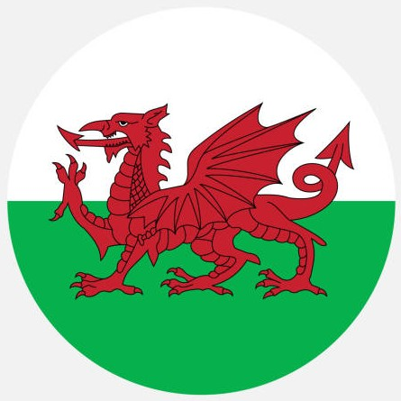

Bem-vindo!
Descubra mais sobre o incrível País de Gales, sua cultura, culinária e música!
Cultura
O País de Gales é conhecido por sua forte tradição celta, festivais e o idioma galês, preservado até hoje.
Culinária
A culinária galesa traz pratos tradicionais como o “Cawl” (ensopado), o “Welsh Cake” e o queijo Caerphilly.
Música
A música galesa é famosa por seus corais e pelo Festival Nacional Eisteddfod, que celebra arte e poesia.
Roleta de Perguntas
▼

Equipe

Alexandre

Carla

Emily

Fernanda

Hadassa

Larissa

Milena

Dinho